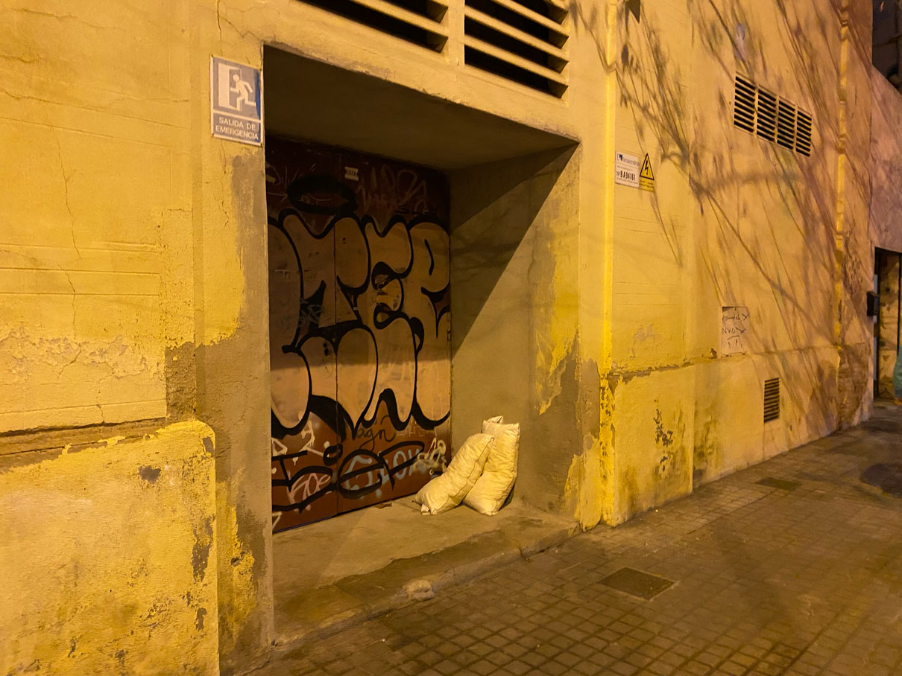
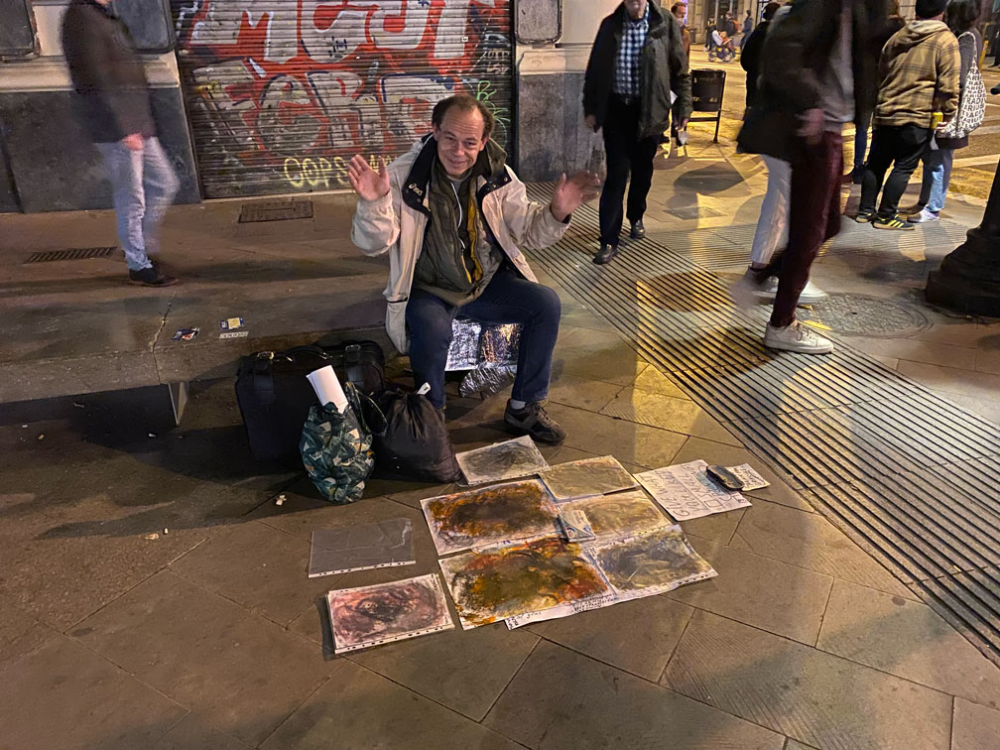
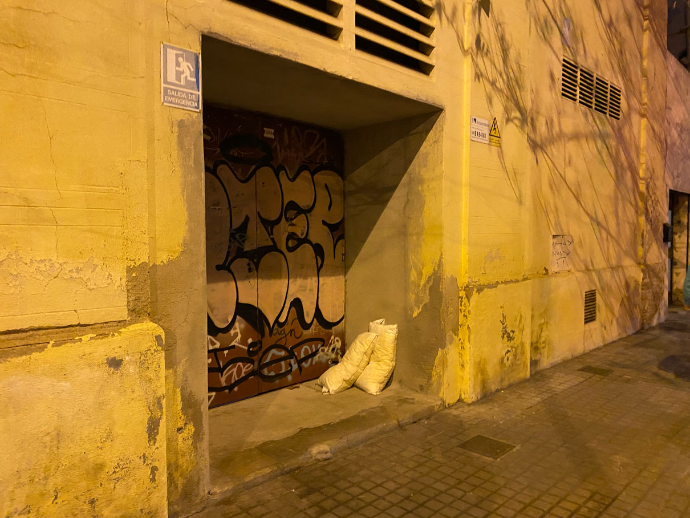
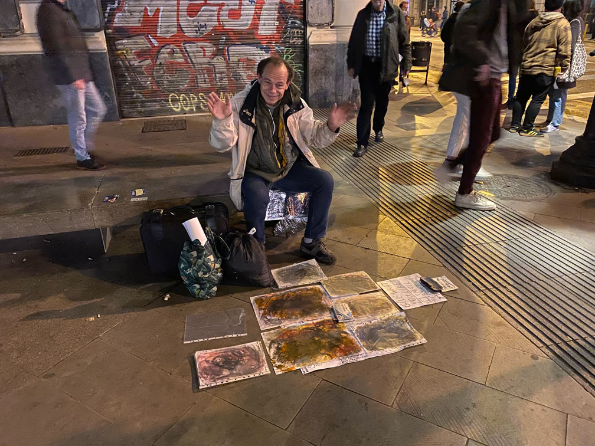

🗓 11 Jaunary 2022 / Design Studio
Transdisciplinary approach: By using knowledge and interest across different fields from biology to artificial intelligence, I am building a more holistic approach to design thinking and process.
Beyond human-centered design: The value in recognizing other agents as a part of the design process effects and putting myself directly into the design and research process to gain first person insight. Understanding a designer’s role beyond that of a problem-solver, and the world full of problems that need solving.
Asset Framing and Solidarity over Charity: The way we frame our objectives from the start is important because it determines the attitude with which we approach our research and design. If we start with deficit framing and the failings of a community or an area of interest, we’ve already adapted a problem-solving mindset. Instead, if we start by framing the topic of community assets; we are able to work from a place of solidarity.
During the first term, I joined the MetaHuman group, with an interest to dive deeper into technology and social impact and investigate the ways humans coexist, co-create, and co-evolve with technology and the digital world. I want to continue working within the field of social design and find ways to explore social inequalities (personal to communal) that are tied to technology in some way. I believe that inclusivity and diversity in technology and design are more important now than ever, as technologies continue to grow and we continue to rely on them to operate in our daily lives.
I also became interested in working with research and design practices such as research through design and speculative design. I was drawn to these practices because I want to explore alternative roles for design other than problem-solving, and using design to generate new knowledge (research) and using design to ask questions about the future (speculation) appeal to me as both important and intriguing roles for design.

Reflexion as a design tool
🗓 25 Jaunary 2022 / Design Studio

I got connected with Esperanca, a volunteer group who collects and distributes food and clothing to homeless people in Barcelona. I first volunteered with Esperanca over the holidays last year. We made sandwiches and I joined them on a walk on the Park Cituidella Route. The group meets in a building in Raval to collect the food and distributes them along two routes in the city: Park route and Raval route. Through this experience, I met many homeless people and some important personal reflections.
In the beginning of February, I met a man named Patrick Highsmith on the street outside of Jaume station. We noticed him sitting on the stone bench before the crosswalk with some paper spread out on the floor. As we were waiting for the light to change, we looked at the papers and noticed he was selling pieces of art. I went to look closer at the pieces and he had some different oil pastel drawings cased in office laminate file paper on the ground, with a sign that said 'small paintings, pay what you can.'
I approached him he said “hola, hello” and I asked him how much the drawings were and what the drawings were about. He said the large ones are 10 and small ones pay what you can. and the drawings he made with oil pastel and acrylic underneath. He was from Germany (German American) and was in Spain trying to make some art and find a way to get by. He tried living in some area in the city and he was getting raped so he left and is going to see the social workers on Monday. He told me this when I asked him if he was okay and had somewhere to stay and eat. He also told me he liked working with drawings and computers. I bought a small painting from him with all the lights change I had left in my wallet which was 2europ 50cent. I received his e-mail and said we would be in touch.

I've prepared interview questions that touch on personal story, experiences in daily life, of the urban space, human relations, and assets and contributions.
🗓 8 February 2022 / Design Studio
For my second collective design intervention, I want to explore the idea of a city or neighborhood as a living museum.
How can we activate our immediate surroundings to reveal important connections and stories? How can narratives be used to shape the way we interact with each other, nature, materials, and spaces? What if visitors were also designers and curators? What if artifacts are not from the past, but from the future?
Using the museum as a platform to explore hidden connections within our daily lives, and activate the ordinary into the extraordinary, and create exchange and dialogue on critical topics. Exploring what a museum can be and how it can be used to collectively co-create diverse and equitable futures.
I have worked in the exhibit design industry for the past few years, and this is a topic we’ve been discussing, especially during the recent pandemic.
What are museums? It turns out many people have difficulty agreeing on a singular definition of a museum, so I’ve come up with one that is a hybrid of sorts, influenced by the International Council of Museums (ICM) and inspired by my desires.
Museums are democratizing, inclusive, and polyphonic spaces for critical dialogue and active speculation about our collective pasts and futures. It is an active and evolving space for reflection, engagement, and co-creation. Museums work with diverse communities (human and non-human) and aim to contribute to global equity and planetary well-being.
Speculative approach (over solutionistic)
Using technology as a tool to enhance and add to experiences, not to replace or replicate
Diverse, democratic, inclusive and accessible
Inspired by DADA perspective
Working with community and crowdsourcing
Juxtaposing data and other invisible information alongside visible artifacts
Go on a neighborhood walk and create a map of interests
Historical research of the neighborhood
Story journey map
Reach out to data collection companies
🗓 22 February 2022 / Design Studio
Reframing through Reflection
To start, I want to highlight key approaches and learnings I am interested in bringing with me moving into the next few months of the program.Transdisciplinary approach: By using knowledge and interest across different fields from biology to artificial intelligence, I am building a more holistic approach to design thinking and process.
Beyond human-centered design: The value in recognizing other agents as a part of the design process effects and putting myself directly into the design and research process to gain first person insight. Understanding a designer’s role beyond that of a problem-solver, and the world full of problems that need solving.
Asset Framing and Solidarity over Charity: The way we frame our objectives from the start is important because it determines the attitude with which we approach our research and design. If we start with deficit framing and the failings of a community or an area of interest, we’ve already adapted a problem-solving mindset. Instead, if we start by framing the topic of community assets; we are able to work from a place of solidarity.
During the first term, I joined the MetaHuman group, with an interest to dive deeper into technology and social impact and investigate the ways humans coexist, co-create, and co-evolve with technology and the digital world. I want to continue working within the field of social design and find ways to explore social inequalities (personal to communal) that are tied to technology in some way. I believe that inclusivity and diversity in technology and design are more important now than ever, as technologies continue to grow and we continue to rely on them to operate in our daily lives.
I also became interested in working with research and design practices such as research through design and speculative design. I was drawn to these practices because I want to explore alternative roles for design other than problem-solving, and using design to generate new knowledge (research) and using design to ask questions about the future (speculation) appeal to me as both important and intriguing roles for design.
Reflexion as a design tool
- Ask why? (5 why’s)
- Look for differences with past actions
- Analyse critical events
- What if? (Look for alternatives)
- Compare yourself with others
- Group discussion and dialogues
🗓 25 Jaunary 2022 / Design Studio
Design Intervention: 1st Person Perspective
How can we design with and for the urban homeless communitites (UH) to create opportunities for constructive social engagement? This intervention explores some broader questions about marginalized communities, and how they are affected by and engage with urban spaces, society, and technology. Focusing on how design and technology can change the ways we perceive and engage with one another. Some of the questions I am asking are: what can we learn from the UH? What are the tools that could help empower the UH and explore their assets and offerings? How can we reflect on and alter our social biases towards one another? More specifically, can we use the anonymity of digital spaces to create more inclusive and safe spaces for people of different social statuses to engage with one another?
Goals:
- Research in inclusive design and designing with/for marginalized communities
- Gather stories and insight from first hand experiences
- Speculate on technologies for inclusive engagement and social contribution
Approach:
- Asset framing and empowerment
- Solidarity over charity
- Understanding power dynamics and systems
- Trying not to project my own feelings onto others
I got connected with Esperanca, a volunteer group who collects and distributes food and clothing to homeless people in Barcelona. I first volunteered with Esperanca over the holidays last year. We made sandwiches and I joined them on a walk on the Park Cituidella Route. The group meets in a building in Raval to collect the food and distributes them along two routes in the city: Park route and Raval route. Through this experience, I met many homeless people and some important personal reflections.
In the beginning of February, I met a man named Patrick Highsmith on the street outside of Jaume station. We noticed him sitting on the stone bench before the crosswalk with some paper spread out on the floor. As we were waiting for the light to change, we looked at the papers and noticed he was selling pieces of art. I went to look closer at the pieces and he had some different oil pastel drawings cased in office laminate file paper on the ground, with a sign that said 'small paintings, pay what you can.'
I approached him he said “hola, hello” and I asked him how much the drawings were and what the drawings were about. He said the large ones are 10 and small ones pay what you can. and the drawings he made with oil pastel and acrylic underneath. He was from Germany (German American) and was in Spain trying to make some art and find a way to get by. He tried living in some area in the city and he was getting raped so he left and is going to see the social workers on Monday. He told me this when I asked him if he was okay and had somewhere to stay and eat. He also told me he liked working with drawings and computers. I bought a small painting from him with all the lights change I had left in my wallet which was 2europ 50cent. I received his e-mail and said we would be in touch.

Next Steps:
I reached out to Marco from Esperanca group, who has been working with the organization for four years and is well acquainted with many of the homeless people in the city. He offered to help in the process of approaching, interviewing, and translating my questions to the homeless people. So I've gathered a document that contains intent and interview questions. I'm not sure where this exploration would go, but I'd like to start by asking questions ...I've prepared interview questions that touch on personal story, experiences in daily life, of the urban space, human relations, and assets and contributions.
🗓 8 February 2022 / Design Studio
Design Intervention: (Co-)designing for emergent futures in the present
Reflecting on my network of pweer and communinty within the context of co-responsibility... Analyze and map the reach of what you are able to respond to... Decide which relations you need to be co-responsible for and which you can delegate..For my second collective design intervention, I want to explore the idea of a city or neighborhood as a living museum.
How can we activate our immediate surroundings to reveal important connections and stories? How can narratives be used to shape the way we interact with each other, nature, materials, and spaces? What if visitors were also designers and curators? What if artifacts are not from the past, but from the future?
Using the museum as a platform to explore hidden connections within our daily lives, and activate the ordinary into the extraordinary, and create exchange and dialogue on critical topics. Exploring what a museum can be and how it can be used to collectively co-create diverse and equitable futures.
I have worked in the exhibit design industry for the past few years, and this is a topic we’ve been discussing, especially during the recent pandemic.
What are museums? It turns out many people have difficulty agreeing on a singular definition of a museum, so I’ve come up with one that is a hybrid of sorts, influenced by the International Council of Museums (ICM) and inspired by my desires.
Museums are democratizing, inclusive, and polyphonic spaces for critical dialogue and active speculation about our collective pasts and futures. It is an active and evolving space for reflection, engagement, and co-creation. Museums work with diverse communities (human and non-human) and aim to contribute to global equity and planetary well-being.
Goals:
- Exploring the future of a museum experience
- Distributing values back into everyday objects, materials, nature, and urban spaces
- Connect people to our physical spaces
- Redefine the hierarchy of the museum structure (ie. visitors become curators)
- Focus on the relations and connections behind artifacts and bodies, to highlight the interconnectedness of everything and thus the impact of our individuals decisions
Approach:
Method:
🗓 22 February 2022 / Design Studio